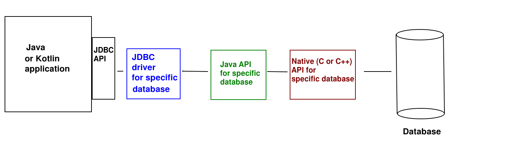

Introduction to Database Development with Kotlin
There are various libraries you can use to persist data in a database within Kotlin. One of the leading libraries is Exposed, which was developed by JetBrains, the developers of Kotlin itself. Exposed provides a high level interface to query a database, in which you can write your queries using Kotlin rather than having to write the SQL itself. However the Kotlin queries are still written with SQL semantics, e.g. you include where clauses in your code.
Introduction to JDBC
Before we look at Exposed, we are going to take a look at JDBC, because Exposed works with JDBC. JDBC stands for Java Database Connectivity and provides a common standard for connecting to any supported database, such as SQLite, Oracle, MySQL, PostgreSQL and so on. The great advantage of JDBC over the "native" methods for connecting to each database is that the same code (either the low-level JDBC API, or a higher-level abstraction such as Exposed) can be used to connect to different databases. The only thing you need to change is the driver and connection.
JDBC drivers
JDBC connects to a range of different databases using drivers. Each database has its own driver, and the driver provides the interface between JDBC and the native database. In other words, the driver translates the common interface that JDBC provides into the specific implementation details needed for each type of database. So there is a MySQL driver, an Oracle driver, and so on.
The diagram below shows a typical architecture of a JDBC application, showing the different components and how they interact. Note that not all databases include all layers.

As can be seen, the JDBC API of your application (common to all databases) communicates with the driver. The driver would then typically communicate with a Java API for your specific database (e.g. SQLite) which then may use a native (C or C++) API for that database to actually communicate with the database itself - as most native database APIs are written in C or C++.
The connection details (the connection string) is different depending on which driver and database are being used. For example:
jdbc:sqlite:wadsongs.dbThe
jdbc: denotes the protocol, which confirms we are using JDBC. The next part of the string is the specific database we are using: sqlite here. The final part of the string is the .db file storing the database. This will be loaded from the main project folder by default.
Working with Exposed
Exposed concepts
When working with Exposed, you will be using several concepts from the API.
- Table. Each database table is represented using an instance of the
Tableclass. When you want to query a given table, you subclassTable, or you can create a singleton object (see below). - Transaction. You must perform your database queries within a database transaction, referenced using the
Transactionclass. - Query. You perform your queries using an instance of the
Queryclass. Once the query has been executed, Queries can hold database results, which you can iterate through. - ResultRow. Each row returned by a SELECT query is represented by a
ResultRow, which you can index to obtain the individual columns - Column. A class representing a database column. You use instances of
Columnto index theResultRowobjects obtained by looping through the database results. - Statement. Statements represent a statement that is currently being executed, such as
InsertStatementorUpdateStatement.
Exposed's default API is known as the DSL (Domain Specific Language) API. What does this mean? Kotlin allows us to create "meta-languages" for performing specific tasks using very clean and intuitive code, making use of lambda functions extensively. In the case of Exposed, we use a "meta-language" which resembles SQL in its logic, yet uses Kotlin code.
We will look at DSLs in more detail in the Mobile Application Development module. For now, you can find out more in the Kotlin documentation.
Setting up an Exposed project
You should select Gradle as your build tool when creating a new Exposed project in IntelliJ IDEA:
You need to specify the Exposed dependencies in the build.gradle.kts file. Replace the existing dependencies block with the following:
val exposedVersion: String by project
dependencies {
testImplementation(kotlin("test"))
implementation("org.xerial:sqlite-jdbc:3.47.0.0")
implementation("org.jetbrains.exposed:exposed-core:$exposedVersion")
implementation("org.jetbrains.exposed:exposed-jdbc:$exposedVersion")
}
and also specify the version of Exposed in gradle.properties:
exposedVersion=0.56.0
We have added the core and jdbc sub-modules of Exposed as dependencies, as well as the Xerial SQLite JDBC driver. Once they are added, ensure you sync your build.gradle.kts to download the dependencies by clicking on the resync icon (a small elephant, which is the logo for Gradle, with a "resync" image):
Connecting to a database with Exposed
When connecting to a database with Exposed, you must provide the JDBC connection string and driver, detailed above. Here is an example:
fun main() {
Database.connect("jdbc:sqlite:wadsongs.db", "org.sqlite.JDBC")
}
Here, jdbc:sqlite:wadsongs.db is the connection string (i.e. we are connecting to an SQLite database named wadsongs.db) and org.sqlite.JDBC is the driver, in this case the Xerial SQLite JDBC driver (the recommended SQLite JDBC driver for Exposed, which we included in our build.gradle.kts).
Working with tables
We can either work with an existing table in an existing database or create tables from scratch. In either case, we must work with objects which inherit from the Table class. Here is an example:
import org.jetbrains.exposed.sql.Table
object Wadsongs : Table("wadsongs") {
val id = integer("id").autoIncrement()
val title = text("title")
val artist = text("artist")
val year = integer("year")
val downloads = integer("downloads")
val price = float("price")
val quantity = integer("quantity")
override val primaryKey = PrimaryKey(id)
}
- First of all note the syntax
object Wadsongs: Table("wadsongs")This looks like inheritance but we are usingobject, notclass. Why? We are creating a singleton object. A singleton is an object that will only ever have one instance, and is a feature of the singleton pattern (we will look at patterns next week). This makes sense here. We are only working with one database and only one instance of a given table within that database. So rather than creating a class calledWadsongs, we create a single-instance object, or singleton, instead. When we need this object later on, we refer to it by its name,Wadsongs. - As the
Wadsongssingleton object inherits fromTablewith an argument of"wadsongs", the data will be stored in, and read from, the tablewadsongs. - In the body of our
Wadsongsobject we define a series of attributes representing each column in the database. These areColumnobjects. Note how we initialise them via methods corresponding to their SQL types, and pass in the column name. Additionally, we mark theidas auto-incrementing by calling theautoIncrement()method. - Note how we specify the primary key. We override the
primaryKeyattribute of the superclass by creating aPrimaryKeyobject using theidcolumn. So,idwill be the primary key of the table.
You can find out more about working with tables in the official documentation. This includes examples of some topics we will not cover here, such as foreign keys.
Creating tables
If our database does not contain the required tables already, we need to create them. We do this with the method SchemaUtils.create, passing our table object in as an argument. For example:
transaction {
SchemaUtils.create(Songs)
SchemaUtils.create(Users)
}
This creates two tables corresponding to the Songs and Users singleton Table objects. Note how all database queries need to be placed within a transaction. transaction is a function which creates a Transaction object, and executes the given lambda so that this within the lambda refers to the Transaction that has been created. Inside the transaction we create the two tables we need.
CRUD operations
CRUD (Create, Retrieve, Update, Delete) describes the standard data operations of creating data, looking up data, updating data and deleting data (in SQL, INSERT, SELECT, UPDATE and DELETE respectively). Here is how we perform CRUD operations with Exposed. You can find out more in the official documentation.
Retrieval (SELECT statements)
Here is an example of some code to perform a SELECT statement to find all rows in the table.
val results = Wadsongs.selectAll()
selectAll() selects all columns; as it is not followed by anything else, it does a SELECT with no WHERE clause. It returns a Query object which can be looped through : each time we iterate, a new ResultRow will be obtained. So a complete example to display all results might be:
transaction {
val results = Wadsongs.selectAll()
results.forEach {
println("Title: ${it[Wadsongs.title]}, Artist: ${it[Wadsongs.artist]}")
}
}
Note how we iterate through the result. In the forEach lambda, it will refer to the current ResultRow. We then use our Column objects to index the ResultRow to find the values in the columns for the current row, and in this example, display them.
SELECT with a WHERE clause
Here is an example of a SELECT with a WHERE clause.
transaction {
val results = Wadsongs.selectAll().where { Wadsongs.artist.eq(chosenArtist) }
Note how we chain a where() call onto the results of selectAll(). This takes a lambda as an argument and this lambda should specify how we will will filter the results to find only those which meet a certain condition. Here, we are selecting only those rows where the Wadsongs.artist column has a value equal to (using the eq() method) the artist that the user is searching for, i.e. chosenArtist.
Infix functions
We could also write the above example as:
transaction {
val results = Wadsongs.selectAll().where { Wadsongs.artist eq chosenArtist }
}
What have we done here? eq is a method, but a special type of method called an infix function. Infix functions (marked with the keyword infix) can be called using a special syntax in which the dot and the parentheses are omitted. This leads to more readable code (note how the second example reads more like a human language construct than the first).
Another example of an infix function is until which returns a Range object representing a range of values up to, but not including, its argument. For example:
for (i in 1 until 10)
loops from 1 to 9. This is equivalent to:
for (i in 1.until(10))
until is actually an infix function which returns an IntRange object up to, but not including, the argument. Furthermore, note how until() is a method of the constant integer 1. This is because, in Kotlin, even primitive types, such as Int, are classes, with their own methods.
SELECTing specific columns
We can select specific columns only by using select() rather than selectAll() and passing in a series of arguments consisting of the Column objects we want to select. For example:
transaction {
val results = Wadsongs.select(Wadsongs.title, Wadsongs.artist)
.where { Wadsongs.artist eq chosenArtist }
}
SELECT where only one row is returned
In cases where only one row is returned you can use the singleOrNull() method of Query to pull out the single row in the results. If no row was returned, null will be returned instead. The return value of singleOrNull() is thus a nullable ResultRow, i.e. ResultRow?.
val results = Wadsongs.selectAll()
.where { Wadsongs.id eq id }.singleOrNull()
INSERT statements
To INSERT a new record you use the insert() method of Table, using your singleton object. This takes a lambda which will be run by the insert() method. In this lambda, it refers to an InsertStatement object which can be indexed by column. So you set the appropriate columns to the values you want to insert:
var songId = 0
transaction {
songId = Wadsongs.insert {
it[title] = "Getting Away With It"
it[artist] = "Electronic"
it[year] = 1989
}[Wadsongs.id]
}
Note that insert() returns the completed InsertStatement object, which will now have the value of the id column filled in. So to access the newly allocated ID, we index this InsertStatement using the Column object Wadsongs.id.
UPDATE statements
The pattern for UPDATE statements combines aspects of INSERT and SELECT. You call the update() method of your Table and supply a lambda which performs the update. Inside the lambda, it will refer to an UpdateStatement in which you can set the columns to values in the same way as for INSERT. However, update() needs a condition which specifies the rows which will be updated. For example:
var nUpdatedRows = 0
transaction {
nUpdatedRows = Wadsongs.update({ Wadsongs.artist eq "The Beetles" }) {
// "it" is an UpdateStatement
it[artist] = "The Beatles"
}
}
In this example we find all rows containing the misspelt artist "The Beetles" and updates them to "The Beatles". Note that update() returns the nunber of rows that were updated.
DELETE statements
DELETE statements are quite easy as we just have to supply a condition. Here is an example:
var nDeletedRows = 0
transaction {
nDeletedRows = Wadsongs.deleteWhere { Wadsongs.id eq 123 }
}
In this example we delete the song where the ID is equal to 123. Similar to update(), deleteWhere() returns the number of rows that were deleted.
Data Access Objects and Data Entities
- When writing object-oriented code to interact with a database or other data source (e.g. a file, or a network data source), we typically make our code easier to read, and thus maintain, by making use of data access objects (DAOs) and data entities. The DAO approach allows you to keep all your database interaction code in one place, keeping the rest of your code "cleaner" and easier to maintain.
- What are data entities and data access objects?
- A data entity is a standard Kotlin object representing an individual entity in your table, e.g. a
Studentobject (from theStudentclass you have already written) representing a record in astudentstable - A DAO provides an interface to your table as a whole, and
might contain methods such as
findStudentById()orfindStudentsByName()(for astudentstable). The methods of the DAO would either return data entities or take them as parameters. - Exposed comes with its own DAO API, however to help you understand the concept of DAOs more clearly, we are going to write our own, using the Exposed DSL API.
- A data entity is a standard Kotlin object representing an individual entity in your table, e.g. a
- Typically we implement a DAO as an interface which specifies a number of methods which will interact with a data source, and then provide an implementation of that interface for a specific data source. This means that, as the interface defines a series of methods with parameters and return types which will always be present in the DAO, we can easily substitute one data source (e.g. database) with another (e.g. network data source) simply by changing the exact DAO class. The method calls will not need to be changed as they are defined by the interface.
Example of a DAO for the HitTastic! database
We will implement a DAO as an interface which specifies a number of methods which will interact with a data source, as discussed above.Below is a Song data class and a WadsongsDao interface specifying some typical CRUD operations. Note how the interface has no dependency on Exposed.
// Data entity
data class Song(var id: Int, val title: String, val artist: String, val year: Int)
// DAO interface
interface WadsongsDao {
fun insertSong(song: Song) : Int
fun findAllSongs: List<Song>
fun findSongById(id:Int) : Song?
fun updateSong(modifiedSong: Song): Int
fun deleteSong(id: Int) : Int
}
We then provide an implementation for the DAO which supports a specific data source/database API, in this case Exposed:
import org.jetbrains.exposed.sql.*
import org.jetbrains.exposed.sql.SqlExpressionBuilder.eq
import org.jetbrains.exposed.sql.transactions.transaction
class ExposedWadsongsDao : WadsongsDao {
override fun insertSong(song: Song) : Int {
var songId = 0
transaction {
songId = Wadsongs.insert {
it[title] = song.title
it[artist] = song.artist
it[year] = song.year
}[Wadsongs.id]
}
song.id = songId // set the provided Song's ID to the ID returned from the INSERT
return songId
}
override fun findAllSongs() : List<Song> {
var songList = listOf<Song>()
transaction {
val results Wadsongs.selectAll()
songList = results.map { Song(
it[Wadsongs.id],
it[Wadsongs.title],
it[Wadsongs.artist],
it[Wadsongs.year]
) }
}
return songList
}
override fun findSongById(id: Int) : Song? {
var song: Song? = null
transaction {
val resultRow = Wadsongs.selectAll()
.where { Wadsongs.id eq id }.singleOrNull()
resultRow?.apply {
song = Song(
id,
this[Wadsongs.title],
this[Wadsongs.artist],
this[Wadsongs.year]
)
}
}
return song
}
override fun updateSong(modifiedSong: Song): Int {
var nUpdated = 0
transaction {
nUpdated = Wadsongs.update({ Wadsongs.id eq modifiedSong.id }) {
it[title] = modifiedSong.title
it[artist] = modifiedSong.artist
it[year] = modifiedSong.year
}
}
return nUpdated
}
override fun deleteSong(id: Int) : Int{
var nDeleted = 0
transaction {
nDeleted = Wadsongs.deleteWhere { Wadsongs.id eq id }
}
return nDeleted
}
}
DAO - Explanation
- Note how the DAO contains a series of methods which perform various
database operations and the data entity (
Song) represents an individual song in the database - The rest of our Kotlin code would interface with the DAO, rather than
using the Exposed DSL directly. For example, your other classes would call the DAO's
findSongById()method to find a song using its ID. - Many of the methods contain a
Songobject as a parameter; the DAO will take thisSongobject and perform the appropriate operation using the data contained within it- e.g. the
updateSong()method will update the details of the song with the ID specified in the song object, to the details contained within the song object
- e.g. the
- Note this code in the
findSongById()method of the DAO:val resultRow = Wadsongs.selectAll() .where { Wadsongs.id eq id }.singleOrNull() resultRow?.apply { song = Song(id, this[Wadsongs.title], this[Wadsongs.artist], this[Wadsongs.year] ) }As we saw above,singleOrNull()will return either a single row (if one exists) ornull(if one doesn't). In this code, if the given ID exists in the database, a row is returned, but if it isn't,nullis returned. We then need to create aSongusing theResultRowfrom the database. However we only want to do this if theResultRowis not null. An apply block with a null-safety operator (?.) is an elegant way of only performing an operation if the subject of theapplycall is not null. It takes a lambda, containing an operation to be performed. Inside this lambda,thiswill refer to the subject of theapplycall (i.e.resultRow). So ifresultRowis not null, we will create aSongcontaining the data from the returned row. Otherwise, the song returned fromfindSongById()will remain null.
Exercise
Implement a console-mode Exposed/SQLite CRUD application for your University application. It should make use of the Student class (from previous weeks) and allow the user to:
- Add a new student, specifying name, course and mark. The student ID will be the primary key in the table and should auto-increment.
- Search for students by course
- Search for student by ID, returning
nullif one cannot be found. - Delete a student by ID
- Edit a student's details (name, course, mark). The user should enter the student ID and new student details, and then the application should update the details of the student with that ID.
When you have got this working, modify your code so that it uses a DAO. (If you prefer, you can implement using a DAO from the start).